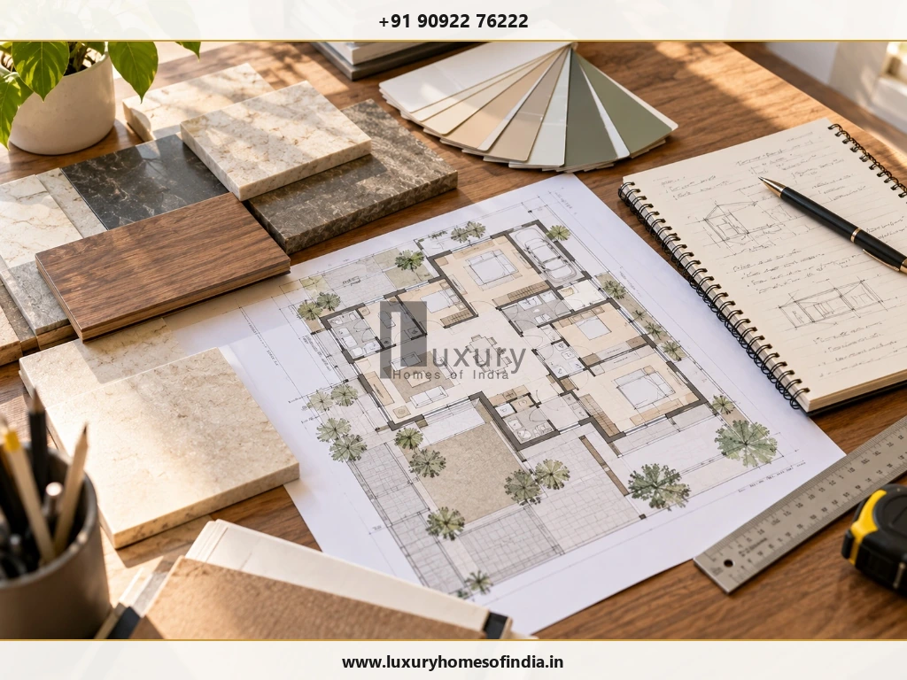
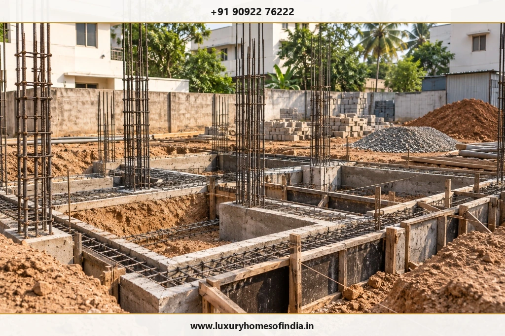
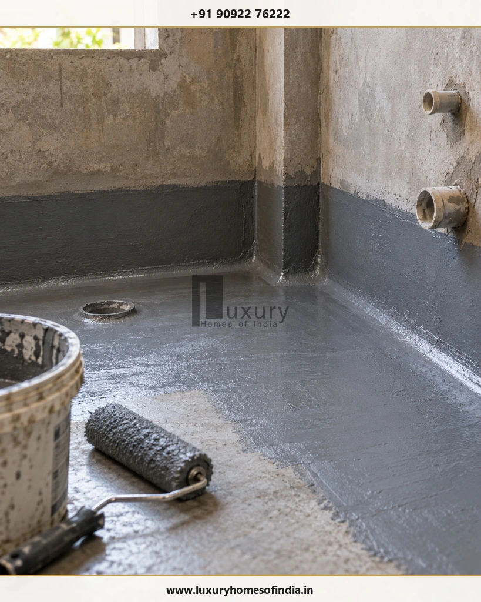

Building a house in Chennai can take several months, depending on the design, number of floors, site conditions, approvals, material availability and level of customisation. As an initial planning guide, a straightforward independent home may require around 9–14 months from design to handover. Larger residences and luxury villas with bespoke finishes may need 12–18 months or longer. These are indicative estimates, not guaranteed completion periods or verified Luxury Homes of India (LHI) project averages.
The total duration includes more than construction work. Architectural design, building approvals, structural work, concealed electrical and plumbing services, waterproofing, finishes and final inspections all affect the move-in date. Some activities can overlap, while others depend on the completion and inspection of earlier work. A realistic schedule should therefore be prepared for the individual property and agreed scope.
This guide explains the main construction stages, factors that can delay a project and practical ways homeowners can plan a more predictable building process.

Contemporary Chennai independent residence representing the successful completion of a well-planned 9–14 month architectural and civil construction lifecycle.
1. How Many Months Does It Take to Build a House in Chennai?
The following ranges are preliminary planning estimates for discussion, not official construction benchmarks or LHI delivery commitments.
| Type of Home | Indicative Planning Range from Design to Handover |
|---|---|
| Compact single-floor house | 7–10 months |
| Standard independent house | 8–12 months |
| Ground-plus-one (G+1) house | 9–14 months |
| Larger G+2 house | 12–18 months |
| Luxury villa with bespoke finishes | 12–18 months or longer |
The actual duration depends on the built-up area, structural design, approval requirements, construction method, finish specifications and site conditions. The categories may overlap: a compact home with complex finishes can take longer than a larger but simpler residence.
Before comparing builders, ask what their quoted timeline includes. One estimate may begin with foundation work, while another may include design, approvals, procurement and final handover.
2. Understanding the House Construction Timeline
A typical residential project follows a sequence of connected activities. Some overlap, so the duration of each stage should not be added mechanically to calculate the total project period.
| Stage | Indicative Duration | Key Activities |
|---|---|---|
| Requirements and architectural design | 3–6 weeks | Brief, planning, elevations and revisions |
| Building approval | Several weeks or longer | Documentation, scrutiny and permission |
| Site preparation and setting out | 1–2 weeks | Clearing, levelling and building layout |
| Foundation and plinth | 3–5 weeks | Excavation, foundations and plinth work |
| RCC structural work | 2–4 months or longer | Columns, beams, slabs and staircase |
| Masonry, plastering and rough-in services | Several weeks; partly overlapping | Walls, electrical conduits and plumbing routes |
| Waterproofing, flooring and finishes | Several weeks to several months | Wet-area protection, tiles, joinery, painting and fittings |
| Inspection and handover | 1–3 weeks | Snagging, checks and documentation |
These durations are indicative and depend on the project scope. They are not a critical-path programme: the actual schedule must identify dependencies, procurement dates, inspections and the sequence in which trades can safely proceed.
Stage 1: Requirements and Architectural Design
Indicative duration: 3–6 weeks
The first stage establishes how the home should function and what the project needs to deliver.
Typical activities include:
- Floor plans, spatial arrangements and room dimensions.
- Structural coordination and basic service routes.
- Exterior elevations, window layouts and material options.
- Revisions, client approvals and working drawings.
Changes made on paper cost significantly less than changes made on site. Rushing this stage often creates coordination issues later.

Initial design coordination: detailed architectural blueprints, material palettes, finish schedules, and scale drawings reviewed before site execution.
Stage 2: Building Approval and Statutory Permissions
Indicative duration: several weeks or longer, depending on the applicable route
In Chennai, permission may involve the Chennai Metropolitan Development Authority (CMDA), Greater Chennai Corporation (GCC) or relevant local body, depending on the plot location, planning parameters and statutory category.
The time needed depends on the completeness of documents, ownership records, planning rules, drawing scrutiny and any clarifications requested by the authorities.
Stage 3: Site Preparation and Foundation
Indicative duration: around 3–5 weeks for foundation and plinth work, excluding exceptional conditions
After the necessary permissions and site readiness requirements are satisfied, the team can begin setting out and foundation work.
Activities may include site clearing, levelling, soil investigation where required, excavation, reinforcement, foundation concrete and plinth construction.
The foundation design depends on the site and engineering requirements. Unexpected underground obstructions, difficult access or unsuitable soil conditions can affect both the method and duration.

Substructure execution: excavation, steel column starters, rebar tying, and plinth beam formwork shuttering during the critical foundation stage.
Stage 4: RCC Structural Construction
Indicative duration: 2–4 months or longer
Reinforced cement concrete (RCC) work establishes the main structural framework of the house.
The work can include reinforcement, formwork, concrete placement, columns, beams, slabs and staircases. Multi-floor homes typically require additional sequencing and coordination between floors.
Structural complexity, spans, concrete supply, labour availability, inspection requirements and weather can influence progress. Concrete strength development, curing and safe formwork removal must follow the approved design and applicable technical requirements.
Stage 5: Masonry and Concealed Services
Indicative duration: several weeks, with activities overlapping where appropriate
Once relevant structural sections are ready, wall construction can proceed alongside the planning and installation of electrical and plumbing services.
This stage may include:
- Masonry and door or window openings.
- Electrical conduits and wiring routes.
- Water supply and drainage lines.
- Internal and external plastering.
- Checks before concealed work is covered.
Poor coordination between trades can result in finished walls being reopened to accommodate changed service routes.
Stage 6: Waterproofing, Flooring and Finishing
Indicative duration: several weeks to several months, depending on the scope
Finishing transforms the building into a functional home. It may include wet-area and terrace waterproofing, testing, tiling, doors, windows, painting, sanitaryware, lighting, kitchen work and selected interior installations.
Custom joinery, specialist stonework, made-to-order windows, imported finishes and integrated home systems may require additional procurement time.
Waterproofing tests, corrective work and suitable preparation between finishing activities should be incorporated into the programme.

Critical wet-area protection: elastomeric waterproofing coating applied with primer and roller to concrete slab prior to tile installation and ponding tests.
Stage 7: Final Inspection and Handover
Indicative duration: 1–3 weeks, depending on outstanding work
Before handover, review the agreed scope and check for incomplete work or visible defects.
A practical checklist includes:
- Doors, windows, locks and hardware.
- Plumbing operation, drainage and leakage.
- Electrical switches, lights and distribution boards.
- Waterproofing and drainage performance.
- Sanitary fittings, water flow and visible finishes.
- Outstanding items and agreed specifications.
- Relevant warranties, manuals and handover documents.
Confirm any applicable completion certificate, utility connection and statutory requirements for the specific property.
3. What Affects House Construction Time in Chennai?
Two houses of similar size can have different schedules because the work depends on more than floor area.
Size and Number of Floors
Larger homes generally require more structural work, services and finishing. Additional floors can increase sequencing and coordination requirements.
Architectural Complexity
Cantilevers, large spans, double-height spaces, custom staircases and complex elevations may require additional design coordination and execution time.
Approvals and Documentation
The applicable process, completeness of the application and any requested revisions can influence when construction can begin.
Material Availability
Custom windows, tiles, sanitaryware, kitchen components and specialist fittings may have lead times that affect subsequent activities.
Contractor and Trade Coordination
Civil, electrical, plumbing, carpentry and painting teams need to work in the correct sequence. Poor coordination can lead to waiting time and rework.
Chennai's Weather
Heavy rain can affect excavation, concreting, external plastering, waterproofing and exterior painting. The effect depends on site drainage, protection measures and construction stage.
Changes During Execution
Moving bathrooms, altering room layouts or upgrading specifications after work has begun can change both the cost and the completion date.
The practical solution is to coordinate design, approvals, procurement and execution through one project-specific schedule.
4. Can You Build a House in Chennai in Six Months?
A limited-scope project may be achievable within six months under favourable circumstances, but six months should not be treated as a reliable design-to-handover promise for a typical independent house.
A short estimate may exclude design development, approvals, procurement, custom interiors, inspections or final documentation. Ask the builder to identify the exact scope and start date behind the commitment.
Before agreeing to a completion date, request:
- A written stage-wise programme.
- Clear milestone dates and dependencies.
- Planned material-ordering and delivery dates.
- Allowances for inspections and essential curing.
- A defined handover checklist.
- A process for recording variations and extensions of time.
A realistic programme is more useful than an attractive estimate that leaves essential work outside its scope.
5. How to Keep Your House Construction on Schedule
Homeowners can reduce avoidable delays by resolving decisions before they become urgent.
1. Finalise the Design
Coordinate architectural, structural and major service requirements before execution.
2. Define the Scope and BOQ
A clear Bill of Quantities and specification schedule help establish what is included, excluded and subject to variation.
3. Use Milestone-Based Planning
Track foundation completion, structural work, masonry, concealed services, finishes and handover against a written schedule.
4. Procure Long-Lead Items Early
Identify custom doors, windows, kitchen components and specialist fittings that may need advance ordering.
5. Coordinate Contractors
Align civil, electrical, plumbing and interior work to reduce waiting time and rework.
6. Review Progress Weekly
Record completed activities, delayed items, pending decisions and materials due.
7. Protect Quality and Safety
Do not bypass structural checks, required curing, waterproofing tests or other necessary quality-control procedures to meet an arbitrary deadline.
Project management session: homeowner and civil engineer tracking weekly Gantt chart milestones, material approvals and inspection checklists.
6. An Illustrative Month-by-Month Construction Programme
The following example demonstrates how work might be grouped for a relatively straightforward independent house. It is not a fixed programme or a forecast for an individual property.
| Period | Illustrative Focus |
|---|---|
| Month 1 | Requirements, design development and documentation |
| Month 2 | Design coordination, approval progress and procurement planning |
| Months 3–4 | Site preparation, foundation and plinth |
| Months 4–6 | Structural work and progressive masonry where appropriate |
| Months 6–7 | Remaining masonry, concealed services and plastering |
| Months 8–9 | Waterproofing, flooring, windows, doors and painting |
| Months 9–10 | Fittings, final finishing, inspections and snag correction |
Actual activities may overlap or extend across several periods. Approval processing may take more or less time, and a larger or more customised home may require additional months.
Ask for a schedule that reflects the real property, approved design, procurement requirements and scope of work.
7. How Should You Plan Your Budget Around the Timeline?
The time needed to build a house also affects household finances. A longer project can extend rental commitments, temporary accommodation, storage costs or construction-loan interest, depending on the homeowner's circumstances and financing arrangements.
To plan more confidently:
- Keep the agreed scope and specifications in writing.
- Link payments to defined, verifiable milestones.
- Confirm how changes affect cost and time.
- Allow for reasonable budget and schedule contingencies.
- Monitor procurement commitments and delivery dates.
- Agree on how delays and revised completion dates will be documented.
8. Frequently Asked Questions
Conclusion: Plan the Timeline Before You Build
Building a house in Chennai requires more than estimating the duration of civil work. Design, approvals, structural construction, service coordination, procurement, finishing and final inspections all influence the move-in date.
For many straightforward independent homes, 9–14 months from design to handover is a useful initial planning range, while larger or highly customised residences may need longer. These ranges should be checked against the actual project scope rather than treated as a promise.
The best way to reduce avoidable delays is to make key decisions early, coordinate trades, plan procurement and track progress against written milestones.
Planning Your Home with Luxury Homes of India
If you are planning an independent house, duplex or luxury residence, begin with a clear brief covering the plot, built-up area, number of floors, design requirements, finish expectations and target move-in date.
Discuss your requirements with Luxury Homes of India to explore the planning considerations for your proposed home. A project-specific schedule should be based on the actual scope, applicable approvals and execution requirements.
Disclaimer: All timelines in this article are indicative planning estimates, not guaranteed completion periods or verified LHI project averages. Actual duration varies with property conditions, design, approvals, specifications, procurement, weather, contractor coordination and other project-specific factors. The written project schedule and agreement should define the expected completion date.
Written by: LHI Editorial Team
Reviewed by: LHI In-House Technical Team